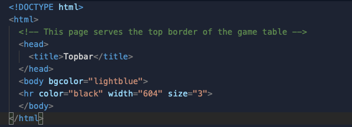

For magic box, I had to first create a framework containing a section for a header, a footer, and a 3 by 3 grid in the middle of the header and footer. In each of the sections of the 3x3, I inserted a table of numbers from 1 to 9 and each number opened an image of that number. As well, the page the number opened contained an undo button which allowed the user to go back to the original 9 number table. Finally, the footer contained links to a a new game page (which sends the user to the same original page) and a solution page (which is a link to an image of the solution).
To make the table for web-tac-toe, I made a framework which separated the top title portion, the middle table portion, the bottom new game portion, left instructions portion as well as sections reserved specifically for the top and bottom borders of the table. The top border was done using an non scrollable frame with an hr tag aligned perfectly to match the table, which can be seen below.
The bottom frame was done using an isolated and aligned frame with a page that had only a black background. The reason why a second hr tag wasn't used was because it would be misaligned. The two squares are actually a table with two image links within them. Each image link opens either the blue or green page within their respective frame.
The green and blue pages are actually also image links which can be clicked to go back to the previous table. The bottom new page frame contained a link to the original index-fp webpage targeted to open in a new tab.
The HTML editor that we used is called Repl.it. Replit is a free, collaborative, in-browser code editor that supports over 50 coding languages as well as multiple files and folders. To use replit, the user has to create a free account using either an email or a service such as github or google which the user already has an account for (See below). The user then gains access to the entire replit tool. When creating a new document, make sure to choose an html document as there are many other options. Choosing the html option automatically enables css documents.
This is by far the most user-friendly editor that we have come across as it includes many great features. Code suggestion is one such feature, where it intelligently predicts the code. The user will write which can be put in with a press of the tab button. This code is also displayed in different colours to allow for the user to easily distinguish between the types of code (See below). When a new file is created, an html template is always there to help save time. If formatting is too hard for the user, or if it seems unconventional, repl.it includes an auto format button. This is located in the top right of the coding editor and is simply a one click button. Repl.it also supports multi-user collaboration, so that the user can send a link to share their code for someone else to edit or to take a look at. Think of it like sharing a Google-docs. Efficiency is also greatly increased with the use of this html editor as there is a virtual web browser built in right into the editor. It can be reloaded on the fly, allowing for the user to see the look of their website change as they code. It also supports the opening of a full page view of the results of the html code that can also be reloaded on the fly. Another feature that we greatly appreciated was the extremely easy to use file organization system. On the left hand side of the screen was a file navigator where we could see all the contents of our folders. Each of the folders were collapsible so it was easy to organize any files and folders that we had (see below). On top of that, Repl.it offers the option to have multiple tabs/files open, similarly to any internet browser. This allowed for us to easily switch between files and make quick fixes to different files. And, if we wanted more space to see the code, we could easily close this sidebar by clicking on the files icon. Last but not least, just like google docs, the html editor automatically saves the code to the cloud (at no charge) as it is typed giving the peace of mind of not having to worry about losing the code at any time. This also allows for another google docs feature, there is a version history. This means that the user can go back at any time and revert the code to a version when it last worked.
One small element of this editor that we noticed that could be improved or changed was the fact that upon creating a project, Repl.it would create a default index.html as well as default javascript and css files. However, this default html file is impossible to delete or move between folders, or at least seemed to be for us. On the other hand, the css and javascript files were deletable. It would be nice to be able to delete this file once the project is created to be able to keep folders clean and not have to delete the file after downloading it as a .zip. Another thing that we noticed was the preview box on the right hand side of the editor. In that area, there is a refresh button which is supposedly to refresh the preview. However, its functionality is not the best, so we would recommend just avoiding the refresh button when testing new updates to the code, and to just press the run button which will start the code from the beginning (See below).
Back
Gordon Ng
JohnnyAppleseed@apple.com